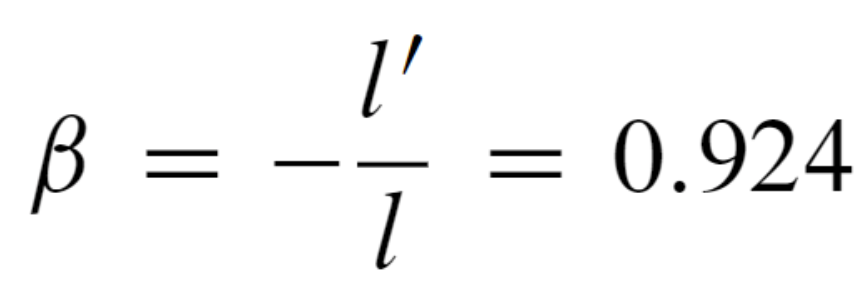
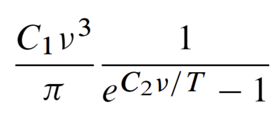
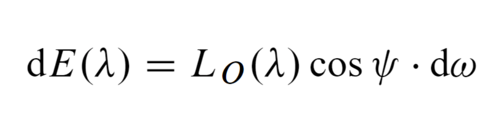

latex使用setmathfont函数配置数学环境字体
小叙
许久不更新，今日有闲写一笔。正所谓是忙中偷闲，明明毕业设计的任务大兵压境，结果还花费一个下午和晚上的时间泡在Latex的美化配置上，真是究极强迫症！
不过浪费这么多时间，也并不是毫无收获，至少，我实现了从去年9月以来的夙愿——终于有了一个彻底的、从自己制作而成的Latex模板了，不管是排版风格、自动序号还是公式里面每一个字母的字体、每一个数学符号的风格，都由我亲手调节得到，总的来说，应该是调教完毕。这个模板等会就上传到github上，可以给后面的同学提供参考。
言归正传
本篇博客的主题是使用\setmathfont函数配置Latex公式的风格（包括字体和字形等），一直以来我的疑问是：能不能通过某种特别的方式，让Latex公式里面的某些不好看的字母变得好看，例如：



本人极其不能忍受这里面的（甚至这个markdown自带的Katex公式都比它们好看），除了一少数的难看的字母以外，大多数符号和字母都是漂亮美观的，我并不想通过直接换一个字体库的方式解决这个问题，我试图通过\symbol函数将这几个不好看的字母替换了。如下：
1 | \newcommand{\sIgma}{{\text{\usefont{U}{nxlmi}{m}{it}\symbol{27}}\mspace{1mu}}} |
这是曾经某次尝试的结果，其中\symbol函数调用的是对应字符的unicode码，也可以是十进制或者八进制码，能替换，但是使用很局限，不能进行加粗和斜体等常规操作。即使再调用stix、fourier等宏包然后使用以上方法修改字体，也总是显示冲突（尤其是stix宏包和amsmath宏包冲突，简直是水火不容!）。退一万步就算使用stix宏包不用amsmath，发现普通字体又不能加粗了，按下葫芦浮起瓢，蚌埠住了。这种方法可以实现按单个字符级别的替换，如下图所示：

最终查阅大量文献和论坛，找到了一个“一劳永逸”的方法，即使用宏包\usepackage{unicode-math}（我实在是太菜了😅，才发现这么好的东西，这里附上unicode-math宏包的网站，也可以直接在命令行中输入texdoc unicode-math进行查看）
unicode-math特性
由于unicode-math的特色就是用unicode码把全部字体字形的数学字符表达出来，其中提到的重要一点就是：可以实现不同数学字体包在同一个数学环境下的使用，换句话说，我可以用A字体表现字母，用B字体表现字母，不再担心冲突的问题。
主要语法只有一句：\setmathfont{font-family}[range=<marco>,features]，这里，font-family填入tex-live支持的数学字体.otf，range内以大括号形式填入macro标签（本标签可在文件unicode-symbols.pdf内查到）。
如果需要查阅自己电脑内的texLive带有哪些数学字体，可以进入文件夹 texlive\2022\texmf-dist\fonts\opentype\public进行查找，一般标有math的就是数学字体，其中最特殊的是stixmath-regular.otf，它明明是个数学字体，却并不能用作是数学环境的全局设置，就算用了还会报警告（虽然这个警告并没有什么可以担心的，强迫症表示难以接受，解决方案在这里提到了，简言之就是使用XITSmath字体代替STIXmath，其他不变即可）
关键代码如下：
1 | \usepackage[bold-style=ISO]{unicode-math}%使用宏包，注意这个选项必须带上，不然正文中使用粗体斜体将冲突 |
美化结果如下所示，本人对这里面的求和号和积分号极为满意，对的小写符号及其加粗结果仍然不算特别满意，目前尚未找到最相近的字体（其实如上图的ψ就非常令人舒适，虽然最后我也没弄明白它是哪个字体的，貌似有点像Times New Roman）